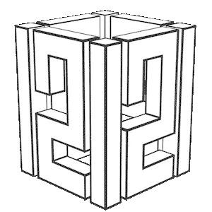
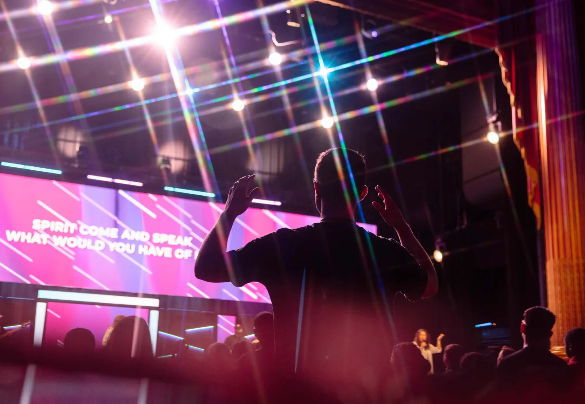
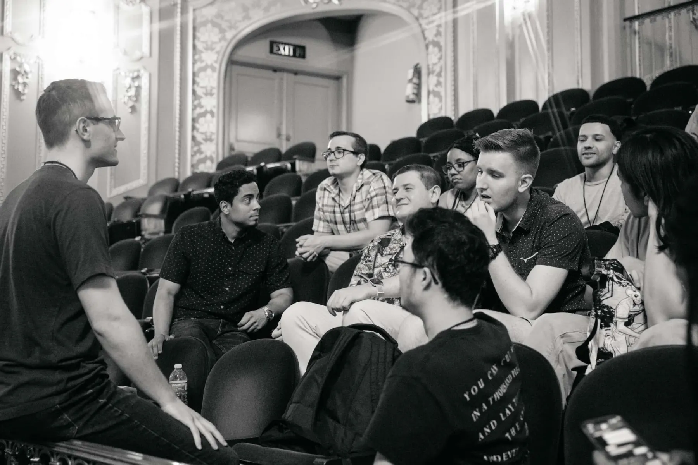
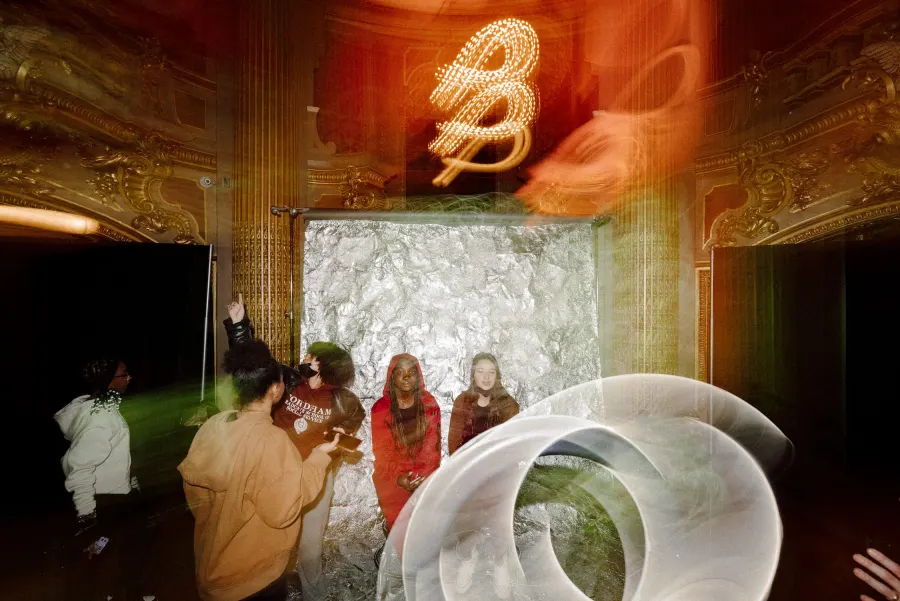
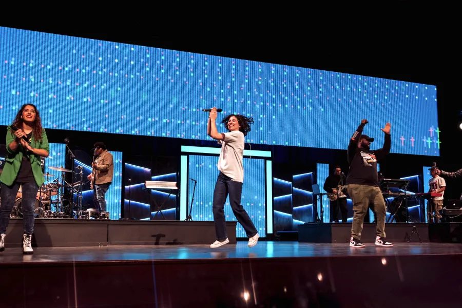
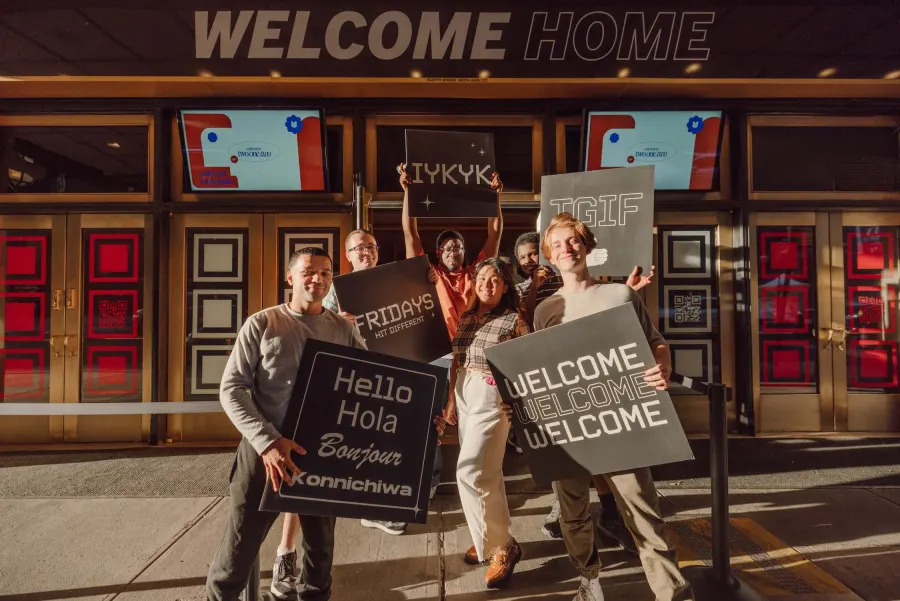

We are the youthand young adults ofTimes Square Church.
We worship, connect, and serve online and in-person until one billion souls are reached.

Every Friday 7PM
1657 Broadway
A weekly in-person service where high school and college students, as well as young adults, can be challenged and encouraged in their relationships and in their faith.
Get directions




212 Next
Jr. High school students
A weekly in-person service where Jr. High School students can be encouraged and grow in their relationships and in their faith.
- Sundays
- 10AM and 1PM ET
- Where
- 237 W 51st Street
Find your community
Find a group of friends who you can be yourself with while growing in your relationship with God. By joining us in-person or online you can discover exactly who God intentionally made you to be.